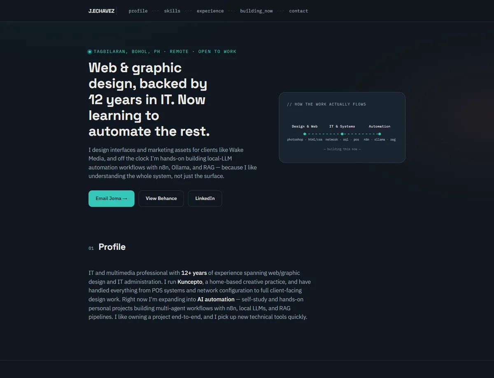
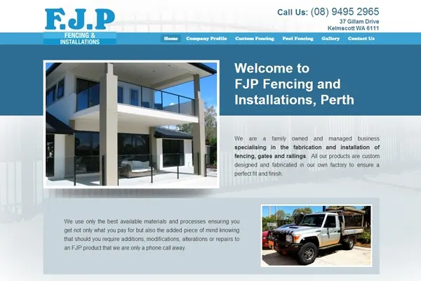
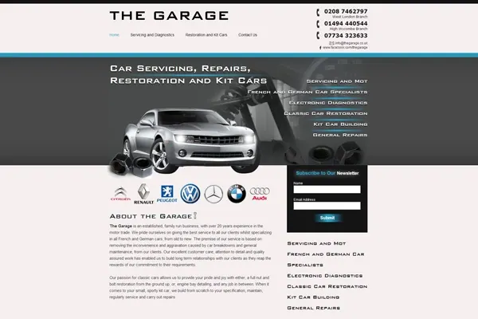
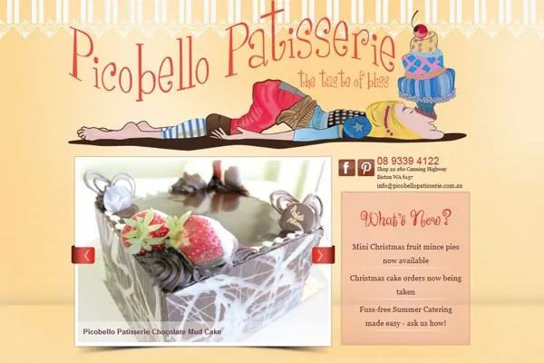
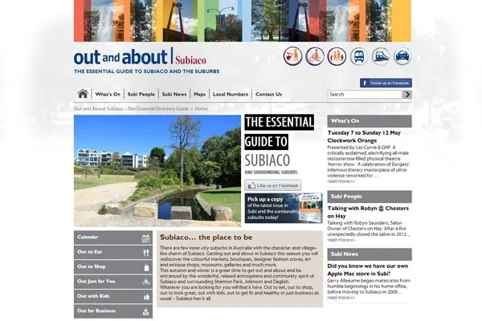
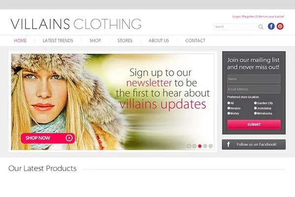
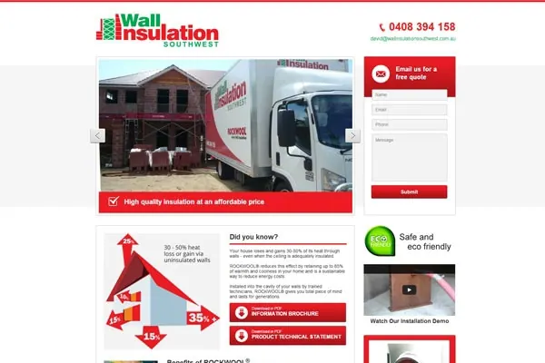
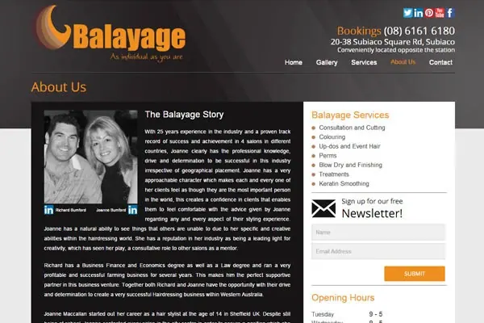

AI & Workflow Automation
Building self-hosted workflows that connect webhooks, local language models, structured data, Google Sheets, and reusable multi-agent processes.
- n8n
- Docker
- Ollama
- Postman
- RAG
- APIs
Hello, I’m Joma.
I turn business problems into working digital systems—combining AI, workflow automation, APIs, data, UX, and hands-on engineering to design, build, test, and document practical systems.
Chat with me
Answers are generated from website content and may make mistakes. Messages may be stored to improve the assistant. Read how this was built →
What I bring
Building self-hosted workflows that connect webhooks, local language models, structured data, Google Sheets, and reusable multi-agent processes.
Technical troubleshooting shaped by experience in IT administration, networks, databases, SQL, and POS environments.
UI and web design, responsive HTML/CSS, WordPress, Shopify, branding, print, and multimedia production.
Featured automation project
I build and explore workflows across self-hosted automation, AI-assisted development, app-to-app integration, local language models, API testing, and knowledge retrieval. My deepest documented project is the n8n multi-agent pipeline, while the wider lab continues to grow across Codex, Claude, Make, and Zapier.
Lab progression · where the experiments are heading
Hands-on personal projects and self-study—not presented as paid client work.
Current toolkit & exploration
Integration & infrastructure
Selected portfolio
An orchestrated system of specialist AI agents that routes real work through planning, tool use, and human checkpoints before anything is written or executed. Local-first architecture, MCP tool connections, persistent memory, and verification at every step — systems built to be checked, not just generated.
Turns plain-language automation ideas into structured, ready-to-load workflows. Its key lesson: valid workflow JSON is not automatically a correct business automation — purpose, data shape, error handling, and the human step decide whether a workflow actually works.
A complete product build from a real business problem — helping travelers discover and book across Bohol. Walks the full chain from business problem to product thinking, UX, and implementation, proving that systems start with people, not code.
Small experiments with documented lessons — webhooks, Google Sheets, AI lead qualification, RAG knowledge bases, and agent systems. Not every project has to be huge; each one must demonstrate increasing understanding.
This self-hosted n8n pipeline turns a webhook request into a chain of specialist agents — an Analyzer, a Planner, and a Developer — running against local language models, with Codex-assisted implementation and normalized results written back to Google Sheets. Each stage was tested, broken, debugged, and documented: the workflow below is the version that survived.


Selected work from an earlier chapter of my career, kept and clearly labeled. These pieces reflect the visual trends and production standards of their time — and document the design and production foundation that still influences the systems I build today.








Eight short reels from the Kuncepto archive — the creative side of the same person who now builds technical systems.
Available for full-time remote opportunities